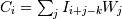
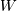

scipy.ndimage.filters.convolve¶
- scipy.ndimage.filters.convolve(input, weights, output=None, mode='reflect', cval=0.0, origin=0)[source]¶
Multidimensional convolution.
The array is convolved with the given kernel.
Parameters : input : array_like
Input array to filter.
weights : array_like
Array of weights, same number of dimensions as input
output : ndarray, optional
The output parameter passes an array in which to store the filter output.
mode : {‘reflect’,’constant’,’nearest’,’mirror’, ‘wrap’}, optional
the mode parameter determines how the array borders are handled. For ‘constant’ mode, values beyond borders are set to be cval. Default is ‘reflect’.
cval : scalar, optional
Value to fill past edges of input if mode is ‘constant’. Default is 0.0
origin : array_like, optional
The origin parameter controls the placement of the filter. Default is 0.
Returns : result : ndarray
The result of convolution of input with weights.
See also
- correlate
- Correlate an image with a kernel.
Notes
Each value in result is , where W is the weights kernel, j is the n-D spatial index over , I is the input and k is the coordinate of the center of W, specified by origin in the input parameters.
Examples
Perhaps the simplest case to understand is mode='constant', cval=0.0, because in this case borders (i.e. where the weights kernel, centered on any one value, extends beyond an edge of input.
>>> a = np.array([[1, 2, 0, 0], .... [5, 3, 0, 4], .... [0, 0, 0, 7], .... [9, 3, 0, 0]]) >>> k = np.array([[1,1,1],[1,1,0],[1,0,0]]) >>> from scipy import ndimage >>> ndimage.convolve(a, k, mode='constant', cval=0.0) array([[11, 10, 7, 4], [10, 3, 11, 11], [15, 12, 14, 7], [12, 3, 7, 0]])
Setting cval=1.0 is equivalent to padding the outer edge of input with 1.0’s (and then extracting only the original region of the result).
>>> ndimage.convolve(a, k, mode='constant', cval=1.0) array([[13, 11, 8, 7], [11, 3, 11, 14], [16, 12, 14, 10], [15, 6, 10, 5]])
With mode='reflect' (the default), outer values are reflected at the edge of input to fill in missing values.
>>> b = np.array([[2, 0, 0], [1, 0, 0], [0, 0, 0]]) >>> k = np.array([[0,1,0],[0,1,0],[0,1,0]]) >>> ndimage.convolve(b, k, mode='reflect') array([[5, 0, 0], [3, 0, 0], [1, 0, 0]])
This includes diagonally at the corners.
>>> k = np.array([[1,0,0],[0,1,0],[0,0,1]]) >>> ndimage.convolve(b, k) array([[4, 2, 0], [3, 2, 0], [1, 1, 0]])
With mode='nearest', the single nearest value in to an edge in input is repeated as many times as needed to match the overlapping weights.
>>> c = np.array([[2, 0, 1], [1, 0, 0], [0, 0, 0]]) >>> k = np.array([[0, 1, 0], [0, 1, 0], [0, 1, 0], [0, 1, 0], [0, 1, 0]]) >>> ndimage.convolve(c, k, mode='nearest') array([[7, 0, 3], [5, 0, 2], [3, 0, 1]])